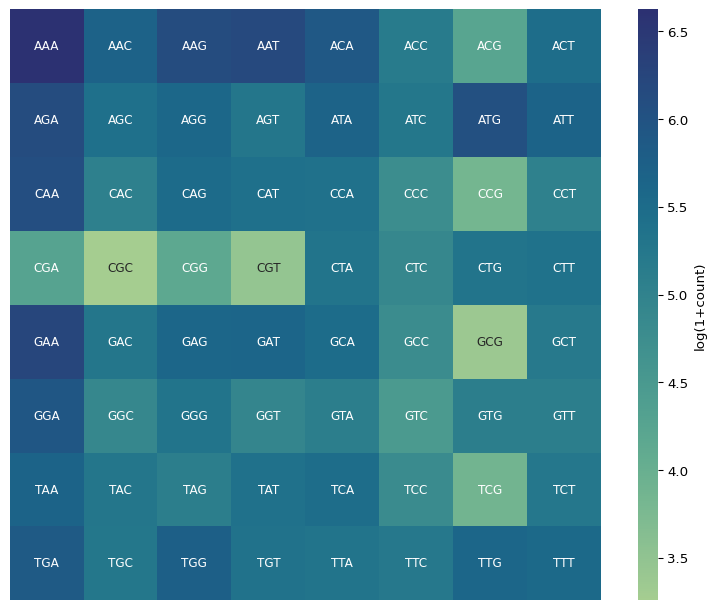
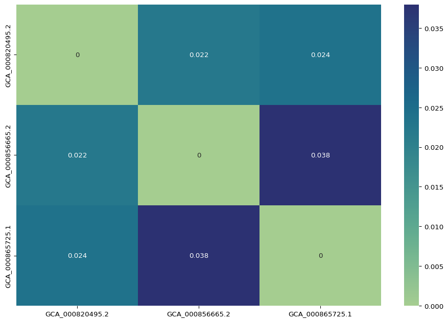

import bionumpy as bnp
# Load genome into memory
genome_fp = "data/ncbi_dataset/data/GCA_000820495.2/GCA_000820495.2_ViralMultiSegProj14656_genomic.fna"
record = bnp.open(genome_fp).read()
# Set k-mer size and alphabet
k = 3
alphabet = "ACGT"
# Compute complete k-mer set and initialize to zero
frequencies = {
"".join(kmer): 0
for kmer in itertools.combinations_with_replacement(alphabet, k)
}
# Decompose into k-mers and compute frequencies
kmers = bnp.sequence.get_kmers(record.sequence, k)
counts = bnp.count_encoded(kmers, axis=None)
for kmer, count in zip(counts.alphabet, counts.counts):
frequencies[kmer] = countMany sequence comparison workflows start with alignment, a computationally intensive task that scales quadratically with sequence length. Here, we explore an alignment-free method for comparing multiple genomes using k-mer counts. Put simply, a k-mer is a contiguous substring of a larger sequence with lenght k.
The workflow is as follows:
- Data retrieval: download the genomes in FASTA format
- Genome decomposition and k-mer counting: split the genome into its component k-mers, keep track of the frequency for each unique k-mer
- Visualization: plot the k-mer spectra
- Measure distance: compute the L2 distance between k-mer counts
Data Retrieval
Three influenza strains and their corresponding genomes accessions are given below:
| Strain | Accession |
|---|---|
| Influenza A | GCA_000865725 |
| Influenza B | GCA_000820495 |
| Influenza C | GCA_000856665 |
Save the metadata as a CSV file in the path data/subtypes.csv. The datasets utility can be used to easily download the genomes in FASTA format. The csvtk command just extracts the accession column from the metadata.
1datasets download genome accession \
--inputfile <(csvtk cut -Uf accession data/substypes.csv) \
--include genome \
--filename data/genomes.zip
2unzip data/genomes.zip -d data- 1
- Download genome files in FASTA format
- 2
-
Unzip folder and extract the files into the
datadirectory
Genome Decomposition and K-mer Counting
In this step, we break down the genome sequence into its substrings of length k while keeping count of each unique substring. The bionumpy library provides the functionality for loading FASTA files and computng k-mer frequencies.
Visualization
We can inspect the distribution of k-mers by plotting their counts as a histogram.
From Figure 1, we can observe that k-mers such as CCG, CGC, CGT, GCG, and TCG have low counts while AAA and GAA have high frequencies. Does this hint that the Influenza genome is AT rich?
Another way to visualize k-mer counts is thru a heatmap. To do this, we first reshape the counts array into a square matrix, then convert the frequencies to log-scale with pseudocounts.

Measuring Distance
The k-mer frequencies are represented as 4k-dimensional vectors. We can estimate the similarity of two genomes by computing a distance metric using their k-mer vectors. To remove the influence of genome size to the computed distance, we first normalize the elements then compute the L2 distance, also known as the Euclidean distance. I’ve packaged our previously implemented functions into a convenience class called KmerSet.
from scipy.spatial import distance
def extract_kmer_counts(ks: KmerSet):
"""Flatten k-mer counts into a row vector"""
return np.array(list(ks.counts().values()))
def kmer_distance(ks1: KmerSet, ks2: KmerSet, metric: str = "euclidean"):
"""Compute the distance between two vectors containing k-mer counts"""
counts1 = extract_kmer_counts(ks1)
counts2 = extract_kmer_counts(ks2)
# Normalize k-mer counts to remove genome size influence
counts1 = counts1 / np.sum(counts1)
counts2 = counts2 / np.sum(counts2)
dist = None
match metric:
case "euclidean":
dist = distance.euclidean(counts1, counts2)
case "cosine":
dist = distance.cosine(counts1, counts2)
case "manhattan":
dist = distance.cityblock(counts1, counts2)
case _:
dist = distance.euclidean(counts1, counts2)
return distComputing the distances between pairwise comparisons of three Influenza genomes, we get the matrix in Figure 3.

The low distance values show the relatedness of the three genomes. This makes sense as all genomes are derived from the Influenza virus. However, we are still able to detect subtle differences between genomes by virtue of their k-mer compositions. Using the distances, we can conclude that Influenza A (GCA_000865725) has a genome that is more akin to Influenza C (GCA_000856665).